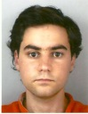
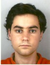

| PhD | Jens Wawerla | SFU | 2010
| | Yaroslav Litus | Google, Waterloo | 2010
| | MSc | Brian Milligan | Big Park Studios, Vancouver | 2012
|
|---|
| Louis Saint-Raymond | EPFL, Lausanne | 2012
|
|---|
| Pante a Jabbari | Fortinet, Vancouver | 2011
| | Alex Couture-Beil | Activision | Blizzard, Vancouver | 2010
| | Adam Lein | Mintec, Vancouver | 2010
| | Pooya Karimian | Worio, Vancouver | 2007
| | Sarah Brown | Mintec, Vancouver | 2007
| | Pawel Zebrowski | InfoMine, Vancouver | 2007
| | Yinan Zhang | software engineering, Vancouver | 2006
| | Roozbeh Mottaghi | UCLA, Los Angeles | 2006
| | Mauricio Zuluaga | Google, Zurich | 2005
| | BSc | Alexander Taggart | | 2012
|
|---|
| Lorin Beer | NSERC USRA | 2011
|
|---|
| Will Storey | | 2011
| | Peter Neufeld | | 2011
| | Ben Saunders | | 2011
| | Jeremy Asher | Co-op intern | 2008
| | Pouya Alagheband | NSERC USRA | 2006
| | Jeremy Holman | NSERC USRA | 2005
| | Pouya Bastani | NSERC USRA | 2004
| | Raj Nallapothola | | 2004
|
|


 



|